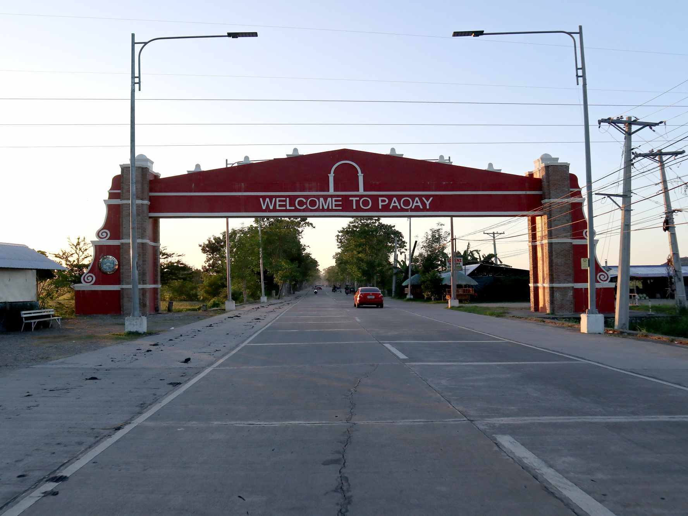

HOME
HISTORY

In 1701, Paoay was established as a municipality by virtue of Royal Decree with Don Martin Guiang known as Kapitan Bosar as its first and founding head. Don Martin Guiang served as Kapitan Bosar from 1701 to 1704.